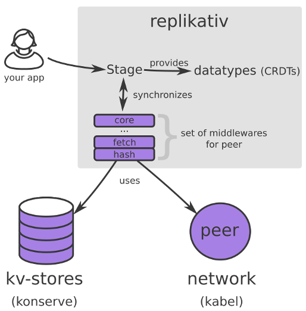

Rapid prototyping with CRDTs and REPLIKATIV
Chrislain Razafimahefa
Shared Object
razafima@gmail.comAbout me
Motivation
Compared to current approaches…
Will it be possible to develop distributed applications…
Distributed Systems
~ Multiple Machines Used For One Purpose

Replication
Challenges with Replication
Magic?
CRDTs
Conflict-free Replicated Data Type

Intuition
Two types of CRDTs
Operation based
Operation based

State based

State based: Max example
State based: convergence
Set

Set

Observed-Remove Set

Available CRDTs
JSON CRDTs

Example

Usage in Industry
REPLIKATIV
What is it?
Noticeable Features
Architecture

Available CRDTs
Usage Illustration
An simple app that capture task lengths in a project

SERVER
1: (defn start-server [] 2: (let [uri "ws://127.0.0.1:31778" 3: store (<?? S (new-mem-store)) 4: peer (<?? S (server-peer S store uri))] 5: (run-server #'base-routes {:port 8080}) 6: (<?? S (start peer)) 7: (<?? S (chan))))
Front end
1: (def user "mail:alice@stechuhr.de") 2: (def ormap-id #uuid "07f6aae2-2b46-4e44-bfd8-058d13977a8a") 3: (def uri "ws://127.0.0.1:31778") 4: (defonce val-atom (atom {:captures #{}})) 5: 6: (defn setup-replikativ [] 7: (go-try 8: S 9: (let [store (<? S (new-mem-store)) 10: peer (<? S (client-peer S store)) 11: stage (<? S (create-stage! user peer)) 12: stream (stream-into-identity stage 13: [user ormap-id] 14: stream-eval-fns 15: val-atom)] 16: (<? S (s/create-ormap! stage 17: :description "captures" 18: :id ormap-id)) 19: (connect! stage uri) 20: {:store store 21: :stage stage 22: :stream stream 23: :peer peer})))
Front End
1: (def stream-eval-fns 2: {'add (fn [S a new] 3: (swap! a update-in [:captures] conj new) 4: a) 5: 'remove (fn [S a new] 6: (swap! a update-in [:captures] disj new) 7: a)}) 8: 9: (defn add-capture! [state capture] 10: (s/assoc! (:stage state) 11: [user ormap-id] 12: (uuid capture) 13: [['add capture]]))
UI

Demo
Conclusion
Thanks
Questions?
Extra slides
Join Semi-Lattice